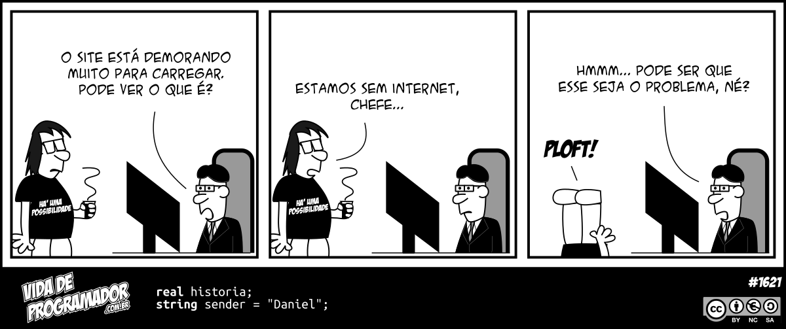
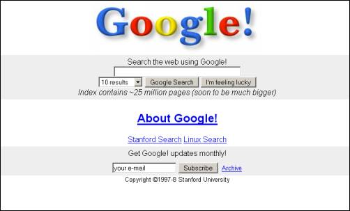
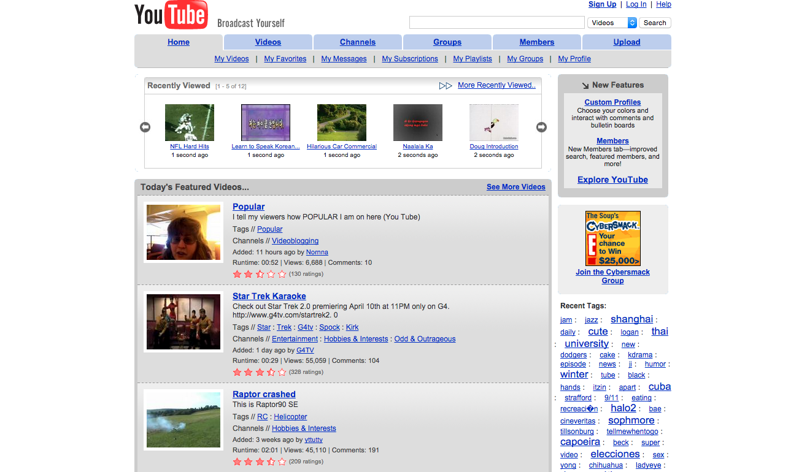
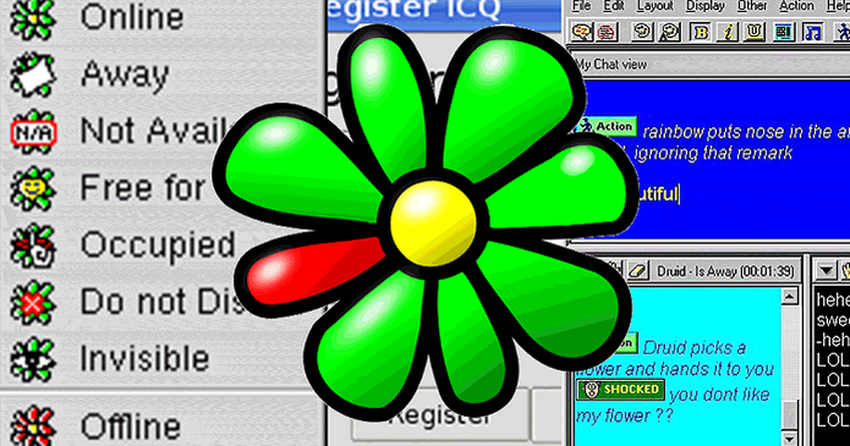

Prof. Me. Gustavo Ferreira Palma
Antes de começar...

Vida de Programador — a conexão é parte da experiência.
Pauta
- Internet ≠ World Wide Web
- Da comutação de pacotes ao nascimento da Web
- Arquitetura cliente/servidor
- DNS, URL, HTTP e HTTPS
- Servidor Web × servidor de aplicação
file:// × http:// e ambiente de laboratório- Como o navegador transforma arquivos em uma interface
Internet e Web são a mesma coisa?
Internet
Infraestrutura global de redes interconectadas.
TCP/IP, roteamento, endereçamento...
Web
Um serviço construído sobre a Internet.
URL, HTTP, HTML, navegador...
A Web usa a Internet. A Internet existia antes da Web.
A Internet é infraestrutura
Aplicações
Web · e-mail · jogos · mensagens
Protocolos de transporte
TCP · UDP · QUIC
Internet Protocol
IP
Redes físicas
Ethernet · Wi‑Fi · fibra · 4G/5G...
A Web é uma aplicação distribuída
👤 Usuário→🌐 Navegador→HTTP(S)→🖥️ Servidor
O navegador pede recursos; o servidor responde; o navegador interpreta e apresenta uma interface.
Parte 2
Uma breve história
Antes da Internet
Comunicação a distância, computadores e redes de dados não surgiram de uma única invenção.
1830–40Telégrafo elétrico
1940sComputadores eletrônicos
1950sComunicação entre computadores
1960sComutação de pacotes
São antecedentes tecnológicos; ainda não estamos falando da Web.
1960s — Redes por comutação de pacotes
1961Kleinrock publica trabalho sobre filas e redes
1962Licklider descreve uma visão de computadores conectados
1966Planejamento da ARPANET
1969Primeiros quatro hosts da ARPANET
1969 — ARPANET
UCLASRIUCSBUtah
Ao fim de 1969, quatro computadores estavam conectados à ARPANET.
A rede nasce como pesquisa de comunicação entre computadores — não como “a Web”.
1970s — A rede começa a ganhar aplicações
1971–72E-mail torna-se uma aplicação central da ARPANET
1973Kahn e Cerf trabalham na arquitetura de interligação de redes
1974Publicação do trabalho sobre internetworking/TCP
1970sRedes diferentes começam a ser interligadas
1983 — TCP/IP
1 jan. 1983ARPANET migra de NCP para TCP/IP
1983TCP/IP consolida a ideia de “rede de redes”
1984DNS começa a substituir listas centralizadas de hosts
1986NSFNET amplia a infraestrutura acadêmica
1989 — A Web é proposta
1989
Tim Berners-Lee, no CERN, propõe um sistema de informação baseado em hipertexto para compartilhar documentos entre pesquisadores.
A Internet já existia. O que nasce aqui é a World Wide Web.
As três peças fundamentais da Web
URL / URIComo identificar um recurso
HTTPComo cliente e servidor conversam
HTMLComo estruturar documentos hipertexto
O navegador une essas peças e apresenta o resultado ao usuário.
1990–1993 — A Web sai do laboratório
1990Primeiro servidor e navegador/editor WorldWideWeb
1991Primeiro website torna o projeto acessível pela Internet
1993CERN libera o software da Web para uso público
1993Mosaic populariza a navegação gráfica
De documentos para aplicações
1990sDocumentos, portais e páginas pessoais
2000sWeb 2.0, conteúdo gerado por usuários e AJAX
2010sMobile-first, SPAs e frameworks frontend
2020sAplicações ricas, PWAs, SSR/SSG e Web APIs
A Web que muitos de nós conheceram



Interfaces, largura de banda, dispositivos e expectativas do usuário mudaram juntos.
UI/UX também conta essa história
- De páginas de documentos para sistemas interativos.
- De desktop fixo para múltiplos tamanhos de tela.
- De “clique aqui” para padrões de interação consolidados.
- De sites isolados para experiências integradas a APIs e serviços.
A tecnologia muda; princípios de usabilidade continuam relevantes.
Parte 3
Arquitetura da Web
Cliente / Servidor
ClienteNavegador
Chrome · Firefox · Edge
HTTP request →
← HTTP response
ServidorApache · Nginx · IIS
ou aplicação
São papéis na comunicação — não marcas de software ou tipos específicos de computador.
O cliente não precisa conhecer o servidor por dentro
- Sistema operacional e hardware podem ser diferentes.
- O contrato está nos protocolos e formatos compartilhados.
- O servidor pode entregar arquivos estáticos ou executar lógica.
- O cliente pode ser navegador, app móvel ou outro sistema.
Da arquitetura local à distribuída
💻
Cliente
→🌐
Web/API
→⚙️
Aplicação
→🗄️
Dados
Essas camadas podem estar na mesma máquina ou distribuídas em vários servidores.
Servidor Web × Servidor de Aplicação
Servidor Web
Recebe HTTP(S) e entrega recursos.
Ex.: arquivos HTML, CSS, JS, imagens.
Aplicação
Executa regras e produz respostas dinâmicas.
Ex.: Spring Boot respondendo JSON.
Na prática, as fronteiras podem se sobrepor.
Exemplo: nossa futura aplicação
VueInterface no navegador
GET /api/pokemon →
← JSON
SpringAPI / regras / dados
Mais adiante, as duas disciplinas vão se encontrar aqui.
Parte 4
Endereços e protocolos
O que acontece quando digitamos uma URL?
1Interpretar a URL
2Descobrir o endereço via DNS
3Conectar ao servidor
4Enviar uma requisição HTTP
5Receber recursos
6Renderizar a página
URL: endereço de um recurso
https://www.exemplo.com:443/produtos/42?moeda=BRL#detalhes
└─┬─┘ └──────┬──────┘ └┬┘ └────┬─────┘ └───┬────┘ └──┬───┘
esquema host porta caminho query fragmento
Nem toda parte aparece em toda URL.
DNS: nomes para endereços
www.unisal.br→DNS→endereço IP
O DNS é um sistema distribuído de nomes. Ele permite que usuários trabalhem com nomes em vez de memorizar endereços numéricos.
HTTP: uma conversa de requisição e resposta
GET /index.html HTTP/1.1
Host: exemplo.com
Accept: text/html
HTTP/1.1 200 OK
Content-Type: text/html
<html>...</html>
Métodos HTTP
| Método | Ideia geral |
|---|
| GET | Obter um recurso |
| POST | Enviar/criar dados |
| PUT / PATCH | Atualizar dados |
| DELETE | Remover um recurso |
Voltaremos a eles quando Vue consumir APIs.
Códigos de resposta
2xxSucesso
200 OK
3xxRedirecionamento
301 / 302
4xxProblema na requisição
404 Not Found
5xxProblema no servidor
500
HTTP × HTTPS
HTTP
Define a comunicação da Web.
Sem TLS, o tráfego não recebe as garantias de confidencialidade e autenticação do HTTPS.
HTTPS
HTTP protegido por TLS.
Criptografia em trânsito + autenticação do servidor por certificado.
Hoje, HTTPS é o padrão esperado para sites e aplicações Web públicas.
Parte 5
Servindo nossa primeira página
Abrir um arquivo ≠ acessar um servidor
Arquivo local
file:///C:/aula/index.htmlO navegador lê diretamente do sistema de arquivos.
HTTP local
http://localhost/aula/O navegador faz uma requisição a um servidor.
Opção 1 — Apache do WampServer
C:\wamp64\www\aula-web\
├── index.html
├── css\
└── js\
Pasta www→Apache→http://localhost/aula-web/
No laboratório, usaremos o Apache já disponível no WampServer.
WampServer não é “a Web”
WampServer
gerencia o ambiente
Apache
é o servidor HTTP que nos interessa agora
PHP / MySQL
não são necessários para nossas primeiras páginas
É importante separar a ferramenta de gerenciamento dos serviços que ela reúne.
Opção 2 — Python
cd minha-pagina
python -m http.server 8000
Depois:
http://localhost:8000/
Ótimo para desenvolvimento rápido e para entender o que significa “servir uma pasta”.
Opção 3 — Mais adiante: Vite
npm run dev
http://localhost:5173/
Quando chegarmos ao Vue com componentes e build, o próprio ambiente de desenvolvimento fornecerá um servidor.
localhost
127.0.0.1
localhost representa a própria máquina.
Não é “o WAMP”. Diferentes servidores podem escutar em diferentes portas da mesma máquina.
http://localhost/ → porta 80 por padrão
http://localhost:8000/ → Python
http://localhost:5173/ → Vite (comum)
Parte 6
Do arquivo à interface
O navegador recebe arquivos
HTMLEstrutura e significado
CSSApresentação
JavaScriptComportamento
Essa tríade será a base dos próximos encontros.
HTML → DOM
<main>
<h1>Pokédex</h1>
<button>Buscar</button>
</main>
HTML→parser do navegador→DOM
O DOM é uma representação estruturada do documento que o JavaScript poderá manipular.
CSS participa da apresentação
button {
padding: 12px 24px;
border-radius: 12px;
}
O navegador combina estrutura, estilos e recursos para calcular o layout e desenhar a interface.
JavaScript acrescenta comportamento
const botao = document.querySelector("button");
botao.addEventListener("click", () => {
console.log("Buscar Pokémon");
});
Antes de Vue, vamos entender pelo menos uma vez como o navegador trabalha sem framework.
DevTools: nosso laboratório dentro do navegador
- Elements: DOM e CSS.
- Console: JavaScript, erros e testes rápidos.
- Network: requisições HTTP e respostas.
- Application: armazenamento e recursos da aplicação.
- Device toolbar: testar diferentes dimensões de tela.
Atividade rápida
- Crie uma pasta
aula-web. - Adicione um
index.html com título, parágrafo e botão. - Sirva a pasta pelo Apache/WampServer ou Python.
- Acesse por
http://localhost.... - Abra o DevTools e encontre a requisição do
index.html na aba Network.
Na próxima etapa...
HTMLO que existe?
CSSComo aparece?
JavaScriptComo se comporta?
Depois disso, Vue responderá: “como organizamos tudo quando a interface cresce?”
Referências e atualização do material de 2017
- CERN — The birth of the Web
- Internet Society — A Brief History of the Internet
- MDN Web Docs — How the Web works
- Material original de Aplicações para Web I (2017), atualizado para esta disciplina.
Dúvidas?
Da infraestrutura à interface: agora podemos começar a construir a Web.